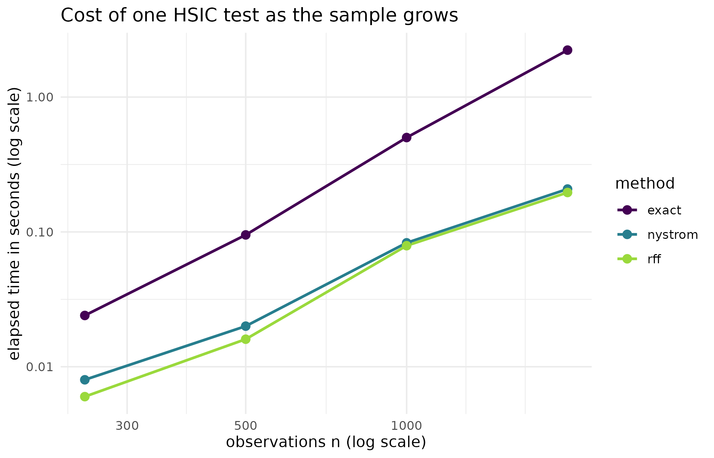

Why
An analyst has outgrown the exact test. My ensemble used to have three hundred members and the independence test was instant. It now has several thousand, the Gram matrix alone is hundreds of megabytes, and every permutation iterates over it. I do not want a different test with different assumptions; I want the same test to finish. What does the approximation cost me, and does it change the verdict? This vignette answers with the two low-rank approximations kernR ships, a reconstruction check against the exact kernel, and a timing grid from 250 to 2000 observations.
What
An exact kernel method stores an n by n
Gram matrix and iterates over it once per permutation, so both memory
and time grow with the square of the sample size. Two standard low-rank
factorisations replace that matrix with a thin factor F
such that K is approximately F F', dropping
the cost to order n m for a rank m much
smaller than n.
nystrom_factor() implements the Nystrom method of
Williams and Seeger (2001): sample
landmark observations, compute their Gram matrix
(
by
)
and the cross-Gram
(
by
),
and approximate
It works for any kernel and is data-dependent, because the landmarks are drawn from the data.
rff_features() implements Random Fourier Features
(Rahimi and Recht, 2007), available for shift-invariant kernels, which
in kernR means the RBF kernel. Draw frequencies
from a normal with covariance
and offsets
uniform on
;
the feature map
gives for features. The projection is data-independent, so the same random features apply to any point cloud at that bandwidth.
hsic_test_nystrom() wires both into a drop-in
accelerated independence test: method selects the
factorisation and m sets the rank or the feature count. It
returns the same kernel_test_result as
hsic_test().
Do
Does the factorisation reproduce the kernel?
A synthetic cloud of 80 points in two dimensions, small enough that the exact Gram matrix can be compared against both approximations directly.
set.seed(1L)
n_check <- 80L
x_check <- matrix(rnorm(n_check * 2L), n_check, 2L)
kern <- kernel_spec("rbf", bandwidth = 1.0)
k_full <- kernel_matrix(x_check, kernel = kern)
fac_ny <- nystrom_factor(x_check, kernel = kern, m = n_check - 1L,
seed = 1L)
k_ny <- tcrossprod(fac_ny$F)
fac_rf <- rff_features(x_check, kernel = kern, D = 1500L, seed = 1L)
k_rf <- tcrossprod(fac_rf$F)
rel_err <- function(k_hat) {
sqrt(sum((k_full - k_hat)^2)) / sqrt(sum(k_full^2))
}
recon <- data.frame(
method = c("nystrom", "rff"),
rank = c(ncol(fac_ny$F), ncol(fac_rf$F)),
rel_err = c(rel_err(k_ny), rel_err(k_rf)),
stringsAsFactors = FALSE
)| Method | Rank or features | Relative Frobenius error |
|---|---|---|
| nystrom | 79 | 0.000000 |
| rff | 1500 | 0.047282 |
What it costs and what it saves
The same independence test at four sample sizes, run exactly and through both approximations. The data are a synthetic pair with a genuine linear dependence, so all three tests should reject.
benchmark_hsic <- function(n, m, n_perm = 49L, seed = 1L) {
set.seed(seed)
x_bench <- rnorm(n)
y_bench <- x_bench + rnorm(n, sd = 0.5)
t_exact <- system.time(
res_exact <- hsic_test(x_bench, y_bench, n_permutations = n_perm,
seed = seed)
)[["elapsed"]]
t_nystrom <- system.time(
res_nystrom <- hsic_test_nystrom(x_bench, y_bench, m = m,
n_permutations = n_perm, seed = seed)
)[["elapsed"]]
t_rff <- system.time(
res_rff <- hsic_test_nystrom(x_bench, y_bench, method = "rff", m = m,
n_permutations = n_perm, seed = seed)
)[["elapsed"]]
data.frame(
n = n, m = m,
method = c("exact", "nystrom", "rff"),
elapsed_s = c(t_exact, t_nystrom, t_rff),
p_value = c(res_exact$p_value, res_nystrom$p_value, res_rff$p_value),
stringsAsFactors = FALSE
)
}
bench <- rbind(
benchmark_hsic(n = 250L, m = 40L),
benchmark_hsic(n = 500L, m = 60L),
benchmark_hsic(n = 1000L, m = 80L),
benchmark_hsic(n = 2000L, m = 100L)
)| n | Rank m | Method | Elapsed (s) | p-value |
|---|---|---|---|---|
| 250 | 40 | exact | 0.024 | 0.02 |
| 250 | 40 | nystrom | 0.008 | 0.02 |
| 250 | 40 | rff | 0.006 | 0.02 |
| 500 | 60 | exact | 0.095 | 0.02 |
| 500 | 60 | nystrom | 0.020 | 0.02 |
| 500 | 60 | rff | 0.016 | 0.02 |
| 1000 | 80 | exact | 0.501 | 0.02 |
| 1000 | 80 | nystrom | 0.083 | 0.02 |
| 1000 | 80 | rff | 0.079 | 0.02 |
| 2000 | 100 | exact | 2.230 | 0.02 |
| 2000 | 100 | nystrom | 0.208 | 0.02 |
| 2000 | 100 | rff | 0.196 | 0.02 |
The figure: where the two curves separate
ggplot2::ggplot(
bench, ggplot2::aes(x = n, y = elapsed_s, colour = method)
) +
ggplot2::geom_line(linewidth = 0.9) +
ggplot2::geom_point(size = 2.5) +
ggplot2::scale_x_log10() +
ggplot2::scale_y_log10() +
ggplot2::scale_colour_viridis_d(name = "method", end = 0.85) +
ggplot2::labs(
x = "observations n (log scale)",
y = "elapsed time in seconds (log scale)",
title = "Cost of one HSIC test as the sample grows"
) +
ggplot2::theme_minimal()
Elapsed seconds against sample size for the exact HSIC test and the two low-rank approximations, on logarithmic axes. The exact curve rises with the square of the sample size; the approximate curves rise close to linearly, so the gap widens with every doubling.
Read
Both factorisations reconstruct the exact Gram matrix closely. Nystrom at rank 79, one below the sample size, has a relative Frobenius error of 1.85e-07; Random Fourier Features at 1500 features has 0.0473. The two get there differently: Nystrom converges as its rank approaches the sample size, Random Fourier Features as the feature count grows, and neither is exact.
The timing grid is the argument. At 250 observations the exact test takes 0.024 seconds and the difference hardly matters. At 2000 observations it takes 2.23 seconds against 0.21 for Nystrom and 0.2 for Random Fourier Features, a speed-up of about 11 times. The figure shows the mechanism rather than the numbers. Fitting a straight line to each curve on logarithmic axes gives a slope of 2.2 for the exact test against 1.62 for Nystrom and 1.74 for Random Fourier Features: the exact test tracks the square law its Gram matrix implies, and the two approximations grow substantially more slowly, so the gap is not a constant factor but one that widens with every doubling.
The verdicts agree. 4 sample sizes, three methods each, and every p-value is 0.02, which is the smallest value 49 permutations can express. That the three methods agree at the permutation floor shows the approximation did not lose the signal; it is not a demonstration that they would agree on a borderline case, which would need a design near the threshold and many more permutations.
Limits
The reconstruction check is run at 80 observations with Nystrom at
near-full rank, which is the easiest case there is; at the ranks the
timing grid uses, 40 to 100 against samples of 250 to 2000, the
reconstruction error is larger and is not measured here. The timing grid
is a single run per cell on one machine and one core, so the numbers are
indicative and not a benchmark: the ratios are the durable part, the
absolute seconds are not. The two approximations also change the
estimator. The exact hsic_test() uses the unbiased HSIC
estimator of Gretton and colleagues (2008); the low-rank path uses the
biased form
,
because that is what factors cleanly through a low-rank approximation.
The bias is of order 1 / n, which is negligible in exactly
the large-sample regime where these approximations are worth using, and
is not negligible at the small sample sizes where the exact test is
affordable anyway. Finally, hsic_test_nystrom() recomputes
its factorisation on every call, so repeated tests against the same
covariate cannot yet share one cached factor even though
nystrom_factor() and rff_features() expose
it.
Notes on practice
Choosing the method. Below about 500 observations the exact test is fast enough and there is no reason to approximate. Between 500 and 5000, Nystrom works for any kernel; a rank in the range 50 to 200 is the usual choice. Above 5000 with an RBF kernel, Random Fourier Features is the cheapest option because its projection is data-independent; 200 to 1000 features is usually adequate for a verdict.
Choosing the rank. A rank of about twice the square root of the sample size is a defensible starting point for Nystrom. When precision matters, measure the reconstruction error on a small subsample as the first section of this vignette does.
Choosing the feature count. The variance of a Random Fourier Feature approximation falls as one over the feature count and its bias is zero in expectation, so more features are always more accurate and cost more memory.
Reproducibility. Both factorisations are randomised.
Pass seed for deterministic output; without it, two runs of
the same test give different numbers.
What to read next
Getting started with kernR introduces the exact HSIC test
these approximations stand in for. Which parameters change the shape
of the output distribution? explains why the total-order
sensitivity indices do not yet use these factorisations. Are these
draws calibrated, and do the engines agree? covers
ksd_test_nystrom() and
concordance_test_nystrom(), the same idea applied to the
goodness-of-fit and concordance tests.
References
- Gretton, A., Fukumizu, K., Teo, C. H., Song, L., Scholkopf, B., & Smola, A. J. (2008). A kernel statistical test of independence. Advances in Neural Information Processing Systems, 20.
- Gretton, A., Bousquet, O., Smola, A., & Scholkopf, B. (2005). Measuring statistical dependence with Hilbert-Schmidt norms. Algorithmic Learning Theory, 63-77.
- Rahimi, A., & Recht, B. (2007). Random features for large-scale kernel machines. Advances in Neural Information Processing Systems, 20.
- Williams, C. K. I., & Seeger, M. (2001). Using the Nystrom method to speed up kernel machines. Advances in Neural Information Processing Systems, 13.
Reproduce
Seed 1 for the reconstruction check and for every cell
of the timing grid, passed to the factorisations and to the permutation
null alike. Timings measured on macOS aarch64, R 4.5.2, one core.
Package versions follow.
sessionInfo()
#> R version 4.6.1 (2026-06-24)
#> Platform: x86_64-pc-linux-gnu
#> Running under: Ubuntu 24.04.4 LTS
#>
#> Matrix products: default
#> BLAS: /usr/lib/x86_64-linux-gnu/openblas-pthread/libblas.so.3
#> LAPACK: /usr/lib/x86_64-linux-gnu/openblas-pthread/libopenblasp-r0.3.26.so; LAPACK version 3.12.0
#>
#> locale:
#> [1] LC_CTYPE=C.UTF-8 LC_NUMERIC=C LC_TIME=C.UTF-8
#> [4] LC_COLLATE=C.UTF-8 LC_MONETARY=C.UTF-8 LC_MESSAGES=C.UTF-8
#> [7] LC_PAPER=C.UTF-8 LC_NAME=C LC_ADDRESS=C
#> [10] LC_TELEPHONE=C LC_MEASUREMENT=C.UTF-8 LC_IDENTIFICATION=C
#>
#> time zone: UTC
#> tzcode source: system (glibc)
#>
#> attached base packages:
#> [1] stats graphics grDevices utils datasets methods base
#>
#> other attached packages:
#> [1] kernR_0.8.2
#>
#> loaded via a namespace (and not attached):
#> [1] vctrs_0.7.3 cli_3.6.6 knitr_1.51
#> [4] rlang_1.3.0 xfun_0.60 otel_0.2.0
#> [7] generics_0.1.4 S7_0.2.2 textshaping_1.0.5
#> [10] data.table_1.18.6.1 jsonlite_2.0.0 glue_1.8.1
#> [13] htmltools_0.5.9 PESTO_0.10.1 ragg_1.5.2
#> [16] sass_0.4.10 scales_1.4.0 rmarkdown_2.32
#> [19] grid_4.6.1 evaluate_1.0.5 jquerylib_0.1.4
#> [22] fastmap_1.2.0 yaml_2.3.12 lifecycle_1.0.5
#> [25] compiler_4.6.1 RColorBrewer_1.1-3 fs_2.1.0
#> [28] Rcpp_1.1.2 farver_2.1.2 systemfonts_1.3.2
#> [31] digest_0.6.39 viridisLite_0.4.3 R6_2.6.1
#> [34] bslib_0.12.0 withr_3.0.3 tools_4.6.1
#> [37] gtable_0.3.6 pkgdown_2.2.1 ggplot2_4.0.3
#> [40] cachem_1.1.0 desc_1.4.3